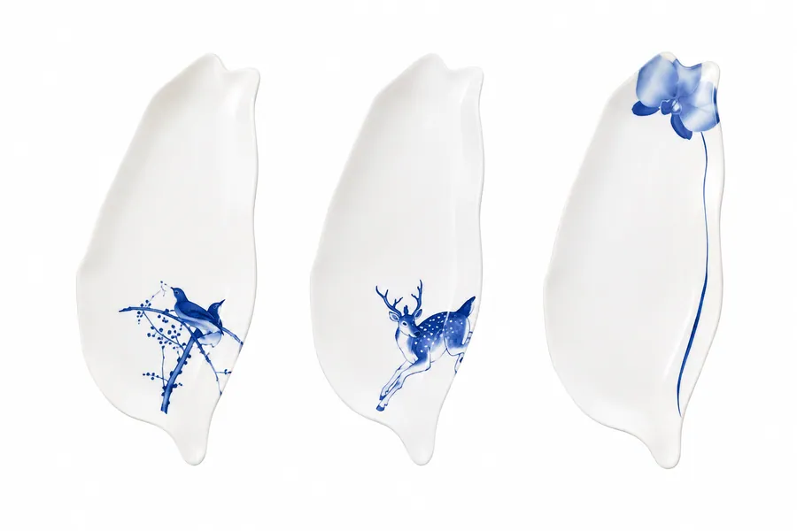

廚房鍋具／料理家電316不銹鋼圓形保鮮盒2100ml LY-1803
廚房鍋具／料理家電316不銹鋼圓形保鮮盒2100ml LY-1803
廚房餐具 ・ 廚房鍋具／料理家電
MIT 精美台灣造型陶瓷盤｜藍鵲・梅花鹿・蘭花 三款可選
以台灣島嶼為設計靈感，結合青花瓷藝術，打造兼具文化意涵與實用性的台灣造型陶瓷盤。共有 藍鵲、梅花鹿、蘭花 三款圖案，每一款都代表著台灣獨特的自然之美，不只是餐具，更是一件值得收藏的藝術品。
- 價格依數量、客製方式與交期而定，歡迎詢價
- 可客製 Logo 印刷、雷射雕刻與專屬包裝
- 可加入多項商品後，一次送出詢價
產品說明
以台灣島嶼為設計靈感，結合青花瓷藝術，打造兼具文化意涵與實用性的台灣造型陶瓷盤。共有藍鵲、梅花鹿、蘭花三款圖案，每一款都代表著台灣獨特的自然之美，不只是餐具，更是一件值得收藏的藝術品。
🕊 藍鵲台灣盤
以台灣特有種「台灣藍鵲」為設計主題，俗稱長尾山娘，擁有鮮豔的藍色羽毛，被譽為「翠翼朱喉，光采照人」，象徵自由、團結與生命力，展現台灣豐富的自然生態。
🦌 梅花鹿台灣盤
以台灣梅花鹿為主題，鹿身上的白色斑點如梅花般美麗，象徵純真、優雅與希望。梅花鹿曾是台灣重要的原生動物，如今透過保育重返山林，也讓這份珍貴的台灣記憶延續下去。
🌸 蘭花台灣盤
蘭花被譽為「王者之香」，與梅、竹、菊並稱四君子。台灣享有「蘭花王國」美譽，以優異的蘭花培育技術聞名世界，蘭花盤象徵高雅、純淨與堅韌，展現台灣之美與職人精神。
整體採用MIT台灣製造陶瓷，盤面細膩溫潤，適合盛裝水果、甜點、下午茶、和菓子、小菜等，也能作為居家擺飾、商務贈禮、外國友人伴手禮、新居入厝禮或收藏紀念。每組皆附精美禮盒與手提紙袋，送禮更顯質感。
商品規格
尺寸：23.5 × 10.5 × H1.5 cm
禮盒尺寸：11 × 26.5 × H3 cm
材質：陶瓷
內容物：台灣造型陶瓷盤 ×1、精美禮盒 ×1、手提紙袋 ×1
相關商品
廚房鍋具／料理家電316不銹鋼圓形保鮮盒2100ml LY-1803 廚房鍋具／料理家電316不鏽鋼密封保鮮盒｜1700ml／2300ml 大容量｜四面鎖扣防漏｜透明上蓋｜可提式便當盒
廚房鍋具／料理家電316不鏽鋼密封保鮮盒｜1700ml／2300ml 大容量｜四面鎖扣防漏｜透明上蓋｜可提式便當盒 廚房鍋具／料理家電650ML咖啡機 SAC-04A
廚房鍋具／料理家電650ML咖啡機 SAC-04A 廚房鍋具／料理家電AMICO MIO KS6305 Leaf 湯匙秤
廚房鍋具／料理家電AMICO MIO KS6305 Leaf 湯匙秤